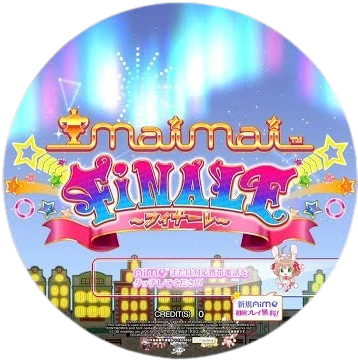
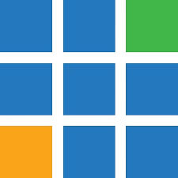

Games
Broadcast
Documentaries
> Check out my Kpop playlist!
arlecyrra
Feel free to send a friend request!

These are the games that I usually play. I kinda hate one of them but I also don't :p

These are the software usually used at my church. I have a copy of the presets they use and I practice the flow of one of our events.
I usually watch true crime or mystery documentaries, North Korean documentaries, and documentaries produced by the Youtubers, fern and RealLifeLore.